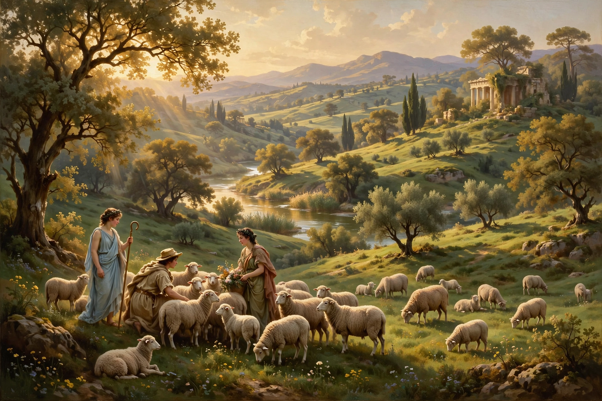

The pastoral is a mode of literature, art and music that depicts the lives of shepherds and rural life in an idealized manner, typically for an urban audience. It originated in Hellenistic poetry and has remained one of the most durable genres in Western culture.

The Greek poet Theocritus (c. 316–260 BC), writing in Syracuse and Alexandria, created the bucolic idyll in his Idylls, featuring shepherds singing in a Sicilian landscape. The Roman poet Virgil adapted the form in his Eclogues (42–39 BC), setting many poems in a fictional Arcadia that became the archetypal pastoral landscape.
Pastoral was revived in the Renaissance by Jacopo Sannazaro's Arcadia (1504), Torquato Tasso's Aminta, and in England by Philip Sidney's Arcadia, Edmund Spenser's The Shepheardes Calender (1579), and later John Milton's pastoral elegy Lycidas. Pastoral drama, romance, poetry and later the novel used the contrast between court/city corruption and rural innocence to explore love, politics and mortality.
Common themes include Et in Arcadia ego — death even in paradise — nostalgia for a lost golden age, and the tension between nature and artifice. Critics such as William Empson in Some Versions of Pastoral (1935) argued pastoral is a process of "putting the complex into the simple." Raymond Williams in The Country and the City (1973) critiqued its erasure of rural labour.
Beethoven's Sixth Symphony is subtitled Pastoral. Painters from Giorgione and Claude Lorrain to the Hudson River School depicted idealized countryside. The mode persists in modern fantasy, environmental writing and film.